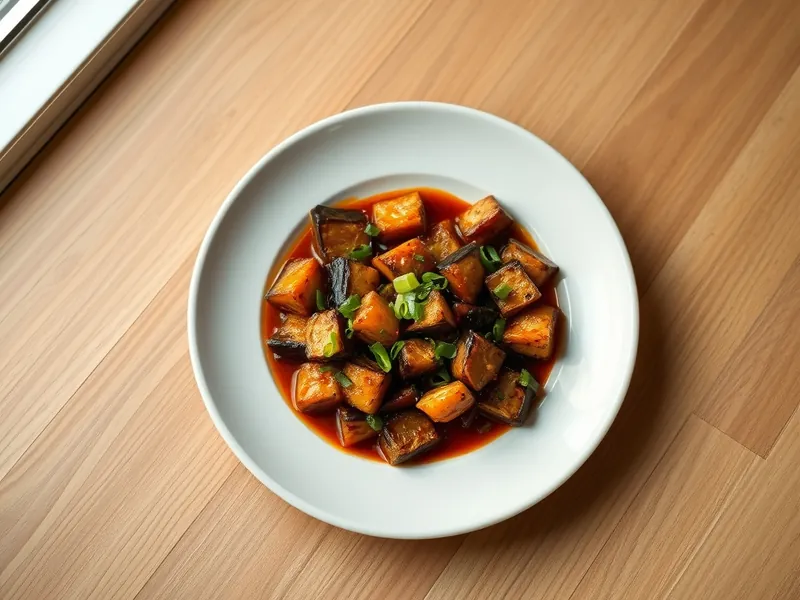

Баклажаны по-сычуаньски с чесноком
Жареные баклажаны в остром соусе из соевого соуса, чеснока, имбиря и рисового уксуса
25 мин2 порц.392 ккал на порциюБ 6 · Ж 25 · У 35Азиатская кухня
Открыть в приложении: порции, таймеры, список покупок
Продукты на 2 порц.
- Баклажан2 шт
- Крахмал1 ст. л.
- Чеснок3 зуб.
- Имбирь10 г
- Зелёный лук20 г
- Соевый соус3 ст. л.
- Сахар1 ст. л.
- Рисовый уксус1 ст. л.
- Острый перец молотый0,5 ч. л.
- Растительное масло3 ст. л.
Как готовить
- Нарежьте баклажаны брусками длиной 6-7 см, посыпьте крахмалом и перемешайте. Чеснок, имбирь и зелёный лук мелко нарежьте. На это уйдёт 6 минут.
- Смешайте соевый соус, сахар, рисовый уксус и острый перец.
- Обжарьте баклажаны в масле на сильном огне 7-8 минут, переворачивая, до золотистой корочки и мягкой середины. Выложите на тарелку.
- В той же сковороде обжарьте чеснок, имбирь и белую часть лука 30 секунд, не давая им подгореть.
- Верните баклажаны, влейте соус и прогревайте 1-2 минуты, пока соус не загустеет и не обволочёт кусочки. Посыпьте зелёным луком и подавайте с рисом.
Совет. Крахмал на баклажанах даёт корочку и не даёт им впитать много масла, поэтому не пропускайте этот шаг.